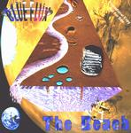

| Artist: | Blue Flux |
| Title: | The Beach |
| Label: | Enthalpy Records |
| Length(s): | 61 minutes |
| Year(s) of release: | 1999 |
| Month of review: | [05/2002] |
| 1) | The Big Sleep | 7.09 |
| 2) | Mary's Notes | 6.11 |
| 3) | Dream Catcher | 7.28 |
| 4) | Atlantis | 7.36 |
| 5) | Committed | 8.02 |
| 6-11) 1000 Years | 24.26 |
After a few sample sounds from the radio, the music gets slowly and again atmospherically underway. There is a definite Floyd feel to this one, maybe a bit of the percussiveness of Money and the spoken vocals (including a similar kind of criticism). Also, I feel a strong ressemblance to say Manning and through this to the likes of Roy Harper. I do like this one a bit less than the previous song. Dream Catcher is mostly acoustic guitar with a bit of percussiveness on the side. All a bit lazy and relaxed sounding, although the song gets a bit more pace later on and an electric guitar adds its bluesy tones and even later some relaxed piano, while finally we get some lush keyboards. It does show you a bit what their next album Sugarbeat is like. Complex windings of acoustic guitar, and a pleasant listen.
Atlantis opens with moody percussives. Think later Gabriel here, but without quite different vocals. The leading instrument is again the acoustic guitar and the vocals remind me of Guy Manning again. The middle part has some somber electronics and effect. Committed is a more melodic track, and a bit more introspective even. Very effect rich and sensuous, but not without plenty of easy-going acoustic guitar. The music gets darker, more intense later on by the heavily, but still rather careful percussion and some sharp shards on guitar. It continues to be directed to evoking atmosphere than anything else. Think of soundtrack music here, but with a lot of variation and not limited to dreamy synths.
The longest track is the six parted 1000 Years, as a way of greeting the new millennium (at the time it was recorded). In the first part I have to supress a need to sing Flash...ahhhahhh, because the bass line does owe a bit to Queen's soundtrack tune for that movie. And if you then add spoken word to this (as Queen also put some snippets from the movie into the song), well then the parallels become even a bit stronger. However, the song's main ingredients are the everpresent acoustic guitar and the twinkling piano, that is until some world music like chants set in. The song moves into mid-tempo rock in this longish first part which takes about a third of the entire length. Part two is very electronic with some restful synths and peaceful acoustic guitar. For its lengths not extremely varied. Part three has some of the weirder effects, rather percussive in all. It has a varied vocal approach (yes or no vocoded) and some organ as well.
The final parts are a bit shorter. Part four is mostly atmospherics with some tenseness building violin (but who is playing it?). The next part is easy-going acoustic guitar again with plenty of keyboards shimmering in the back and some piano running through. The final short part has romantic and orchestral keyboards as well as a fitting vocal conclusion.